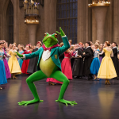
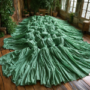

На балу в Хогвартсе Невилл решил показать свой Патронус, чтобы произвести
впечатление на свою возлюбленную. Однако, когда он произнёс заклинание, его Патронус превратился в танцующую
лягушку, которая начала прыгать по всему залу, вызывая смех и удивление всех присутствующих. Невиллу было
стыдно, но, увидев, как лягушка танцует, он начал танцевать вместе с ней, и вскоре вся комната была полна
веселья и смеха.

Танцующая лягушка на балу
«Это было неожиданно, но очень весело!» — признался один из студентов.
Проклятие на Зелёные Платья
На уроке истории магии профессор Бинс рассказал о злом заклинании, которое,
как считается, прокляло несколько зелёных платьев. Заинтригованные, ученики решили провести эксперимент, но,
когда они надели платья, они начали вести себя, как если бы были живыми! Платья начали танцевать, спотыкаться и
завязываться в узлы, создавая настоящий хаос в классе. Профессор Бинс, заметив веселье, тихо заметил: «Магия
платья всегда была загадочной...»

Зелёные платья беспомощно запутавшиеся в танце
«Магия платья всегда была загадочной...» — профессор Бинс.
Шутка дня
Умение Гарри Поттера понимать язык змей очень пригодится ему в будущем, особенно при общении
с женой и тёщей.